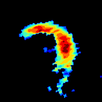

Select all images containing the roosts that are easily identifiable and prominent
To select an image, click on it. Selected images will be highlighted.
Here are some examples of 'good' roost. They should be fairly easy to spot
Here are examples of 'bad' roost. These cannot be spotted easily. Do not select such roosts